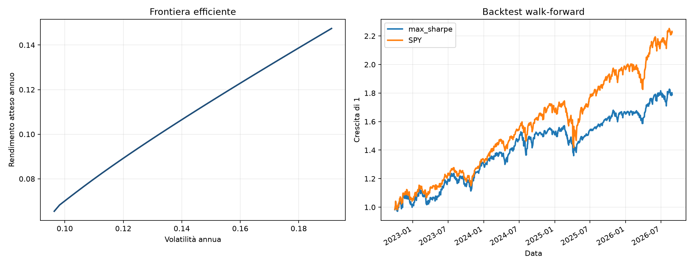
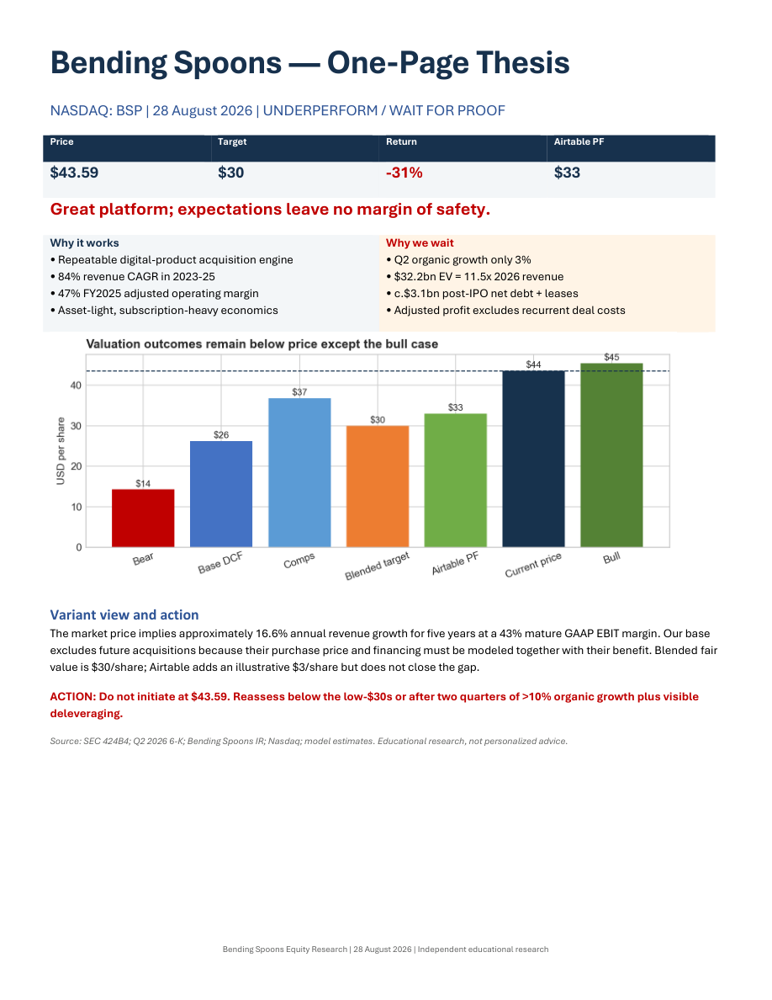
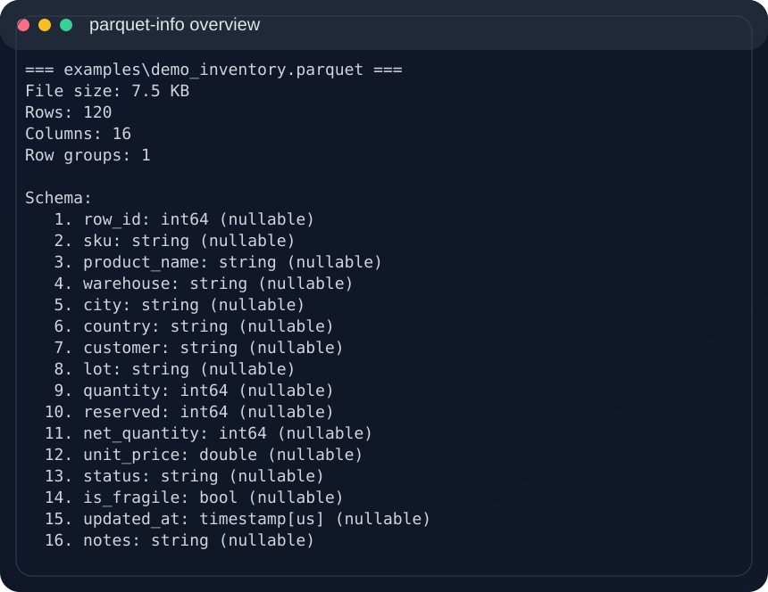
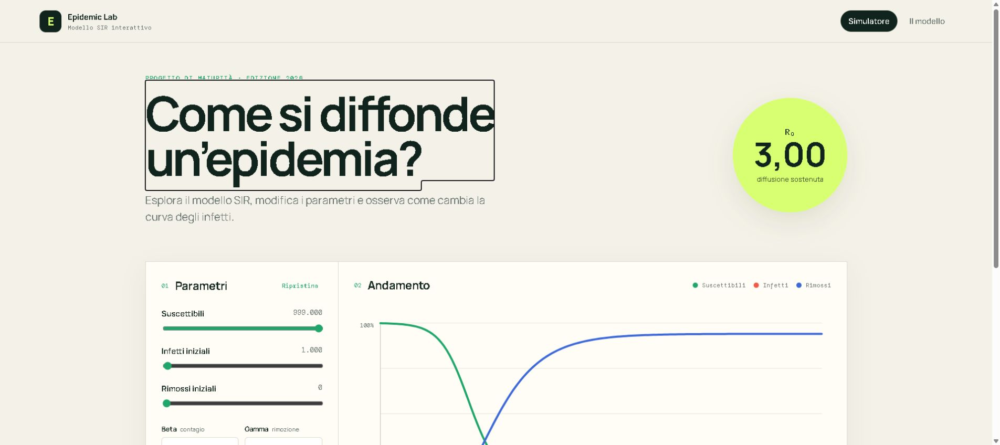
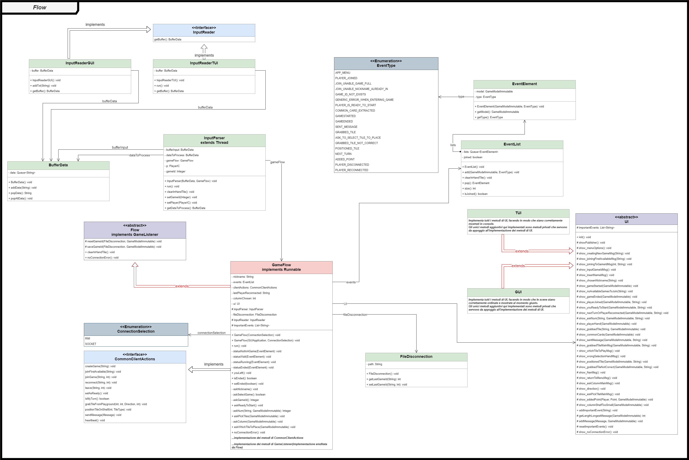
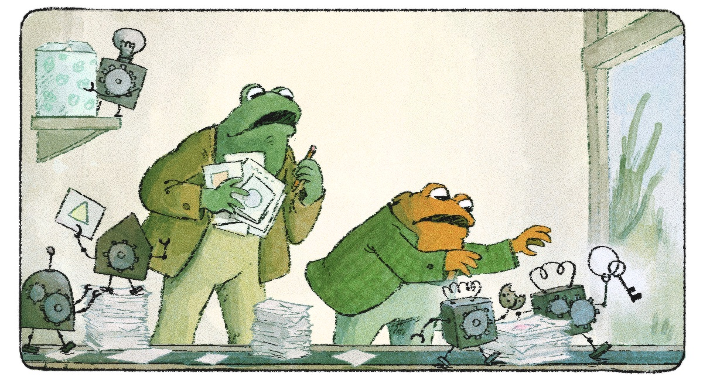

Portfolio Optimizer
A configurable desktop and command-line application for market data, risk analysis, constrained optimization and walk-forward validation.

Business Intelligence · Data · Quantitative software — Milan
BI, data analytics & software development specialist at The First. MSc in Mathematical Engineering at Politecnico di Milano.
1
Company-wide BI platform, from legacy AS400 data to executive Power BI dashboards
6
Case studies across data tooling, finance, modelling and software
2
Degrees from Politecnico di Milano: Computer and Mathematical Engineering
3yrs
Teaching high-school mathematics at Istituto Zaccaria
A configurable desktop and command-line application for market data, risk analysis, constrained optimization and walk-forward validation.

Independent initiating coverage combining a forecast model, DCF, trading comparables and a decision-ready investment thesis.

A focused CLI that turns an unfamiliar Parquet file into an inspectable, searchable dataset.

An interactive SIR simulator that makes differential equations tangible in the browser.

A multiplayer board game engineered by a four-person team across networks, interfaces and recovery.

Italian translation of Elizabeth Van Nostrand’s illustrated story about increasingly capable AI systems, published on the author’s website with translator credit.

— now
Business Intelligence, Data Analytics & Software Development Specialist
Company-wide reporting, data integration and automation, from legacy AS400 sources to executive Power BI dashboards.
— 2026
BSc Computer Engineering → MSc Mathematical Engineering
Software engineering and distributed systems first, then advanced quantitative study.
— 2025
Web developer · Next.js & modern web technologies
Frontend and full-stack applications for businesses and professionals with Next.js, TypeScript, PostgreSQL and GraphQL.
— 2025
Mathematics teacher
High-school mathematics teaching, tailored lesson planning and technology-supported instruction.
03 — Practice
I
Business Intelligence, KPI frameworks, Power BI, data governance and reporting systems built around real operational needs.
II
Python, PostgreSQL, TypeScript and modern web technologies used to make processes clearer, faster and less fragile.
III
Mathematics teaching and lesson design, with an archive of notes and exercises kept available for students and colleagues.
Teaching archive in Italian
04 — Approach
I work where business intelligence, data governance and software meet, moving from a loosely defined problem to a structure that people can understand, maintain and use.
05 — Next step
Business intelligence, analytics and software work, or a deeper look at any of the projects above. Email is the quickest way to reach me.